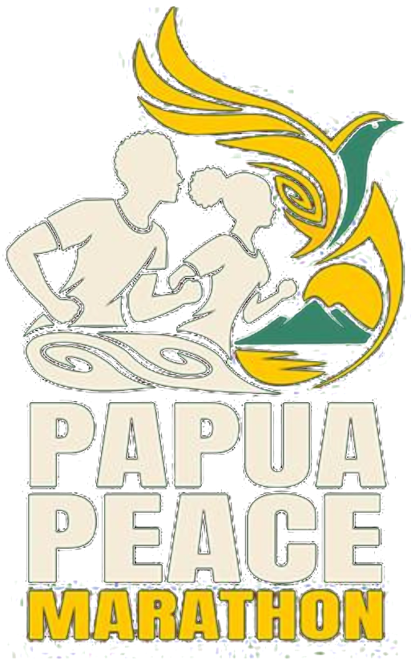

Situs resmi segera hadir
Segera Hadir
Perdamaian Garis Finis Kita Bersama
Gerakan lari lintas komunitas yang mengajak Papua untuk mengalami, membangun, dan merayakan perdamaian bersama — dari Jayapura hingga Muara Tami.
Kategori lomba
5KLari Jarak Pendek
10KLari Komunitas
21KSetengah Maraton
42KMaraton Penuh